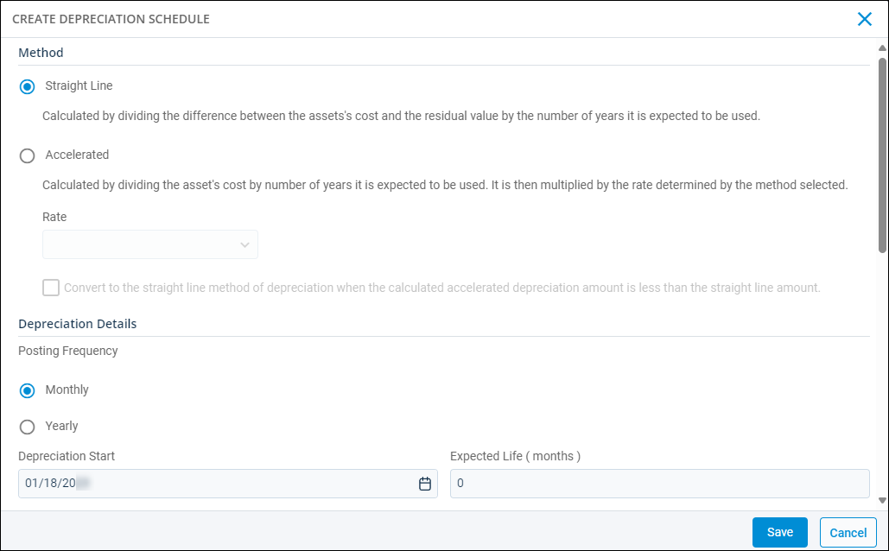
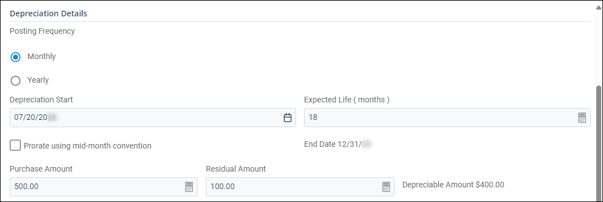
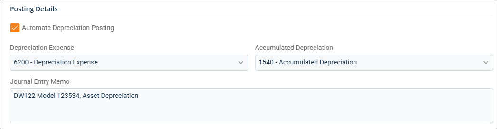
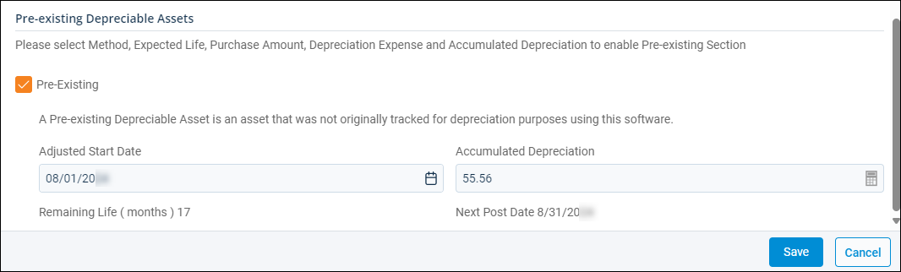

Source: https://rmxhelp.rentmanager.com/Topics/Express/Other/Asset-Depreciation-Schedule-Add.htm
Create a Depreciation Schedule
Businesses that capitalize the cost of certain assets purchased for the business must track the depreciation of these assets over time. Depreciation is the consistent reduction in the value of an asset and the allocation of the asset's cost over a period of time. Rent Manager gives you the ability to create depreciation schedules that track and create journal entries that represent this decline in value. For example, in manufactured housing, the houses themselves lose value over time through depreciation; similarly, in apartments or single-family house (SFH), a dishwasher or washer/dryer depreciates over time.
The Create Depreciation Schedule pop-up is designed to help you easily add a depreciation schedule for an asset into Rent Manager. Once created, the depreciation schedule is added to the asset's details page where you can post depreciation as well as manage, track, and report on the asset during its useful life.
Related Privileges
| Group | Privilege | Column |
|---|---|---|
| Asset Management | Manage Assets | Enabled |
| Depreciation Schedules | Add |
For more information, refer to Control User Access.
Step 1: Select Depreciation Method
To create a depreciation schedule, do the following:
-
Go to
 arrow_forward Rental Info arrow_forward General arrow_forward Assets and select an asset from the list.
arrow_forward Rental Info arrow_forward General arrow_forward Assets and select an asset from the list.
The asset's details page displays. -
On the General tile, make sure Track Financials is enabled for this asset.
- On the Depreciation tile, click Create Depreciation Schedule.

-
In the Method section, select the method by which the asset will depreciate, using the following options:
Method Description Straight Line
The asset depreciates by a fixed value each month or year. Straight line depreciation is calculated using the following formula:
Depreciation Expense = (Beginning Asset Value - Residual Value) / Expected Life
Accelerated
The asset depreciates at an accelerated rate, meaning that the decrease in value is higher during the earlier years of the asset's life.
Optionally, you can have the depreciation method switch to the straight line method automatically when the depreciation amount would be greater using that method (typically between 1/2 and 3/4 of the way through the accelerated method) by checking Convert to the straight line method of depreciation when the calculated accelerated depreciation amount is less than the straight line amount.
Selecting this method requires you to choose a rate for the accelerated depreciation. You have two options:
150% Declining Balance
The asset's value declines at 150% of what straight line would calculate, using the following formula:
Depreciation Expense = Beginning Asset Value * (1 / Expected Life) * 1.5
200% Declining Balance
The asset's value declines at 200% of what straight line would calculate, using the following formula:
Depreciation Expense = Beginning Asset Value * (1 / Expected Life) * 2.0
Step 2: Enter Depreciation Details
In the Depreciation Details section, you can configure the asset's depreciation posting schedule. The information entered in this section determines when and for how long the asset depreciates.

The following fields display:
| Field | Description |
|---|---|
|
Posting Frequency |
The depreciation journals for this asset post either Monthly or Yearly with the default posting date being either the last day of the month or the last day of the year. |
|
Depreciation Start |
The date on which depreciation begins calculating. By default, the date entered in the Purchase Date field on the Asset detail page in the Details tile populates. |
|
Expected Life |
The number of months or years that you expect the asset to be in service. This is the number of months or years during which the asset depreciates. More Information Depreciation schedules with a posting frequency of yearly can have quarter-year entries for the Expected Life. For example, an asset with an expected life of 5 years, 9 months has an Expected Lifevalue of 5.75 based on the following formula: 5.75 = 5 years + (9 months/12 years). |
|
Prorate using mid-month convention |
Depreciation calculates on a prorated basis for the first month or year. For example, on a monthly basis, if the Depreciation Start date is 12/15/2026, enabling this option calculates depreciation for only sixteen days in the month of December. This moves the remainder of December's depreciation amount to the end of the depreciation schedule, adding an extra month beyond the Depreciation End date. |
|
End Date |
The day on which the depreciation schedule ends, as determined by the asset's expected life. This field automatically populates based on the Expected Life entered above. |
|
Purchase Amount |
The amount paid to purchase the asset. By default, the amount entered on the Asset details page on the Details tile in thePurchase Price field populates. |
|
Residual Amount |
The expected amount that the asset will be worth at the end of its depreciation. This is also known as the salvage amount. |
|
Depreciable Amount |
The difference between an asset's cost and its residual value—in other words, the value that needs to be depreciated over the asset's useful life. The Depreciable Amount automatically populates based on the Residual Amount entered by using the following formula: Depreciable Amount = Purchase Amount - Residual Amount |
Step 3: Enter Posting Details
In the Posting Details section, you can enter the GL accounts that are impacted when posting the depreciation schedule.

The following fields display:
| Field | Description |
|---|---|
|
Automate Depreciation Posting |
Depreciation posts automatically for this asset every month or year, depending on the Posting Frequency selected. Automated journal entries for assets that depreciate monthly are posted on the last day of each month, and automated journal entries for assets that depreciate yearly are posted on the last day of the financial property's fiscal year. Related Preferences To set up automation schedules, you must have the appropriate automation enabled in system preferences. For more information, refer to Task Automation (System Preferences). |
|
Depreciation Expense |
The expense account that is used to track the decline in the asset's value over time. This account is debited in each journal entry created to increase the depreciation expense for the asset. This must be an expense-type general ledger account. |
|
Accumulated Depreciation |
The asset account that is used to track the asset's value over time. This account is credited in each journal entry created to decrease the value of the asset. This must be an asset-type general ledger account. |
|
Journal Entry Memo |
A memo or description to be used for each journal entry created in posting depreciation to track this asset's depreciation. |
Step 4: Add Pre-existing Depreciable Assets
If this asset already began to depreciate before being tracked by Rent Manager, in the Pre-existing Depreciable Assets section, enter the applicable information (e.g., a dishwasher or vehicle that your property management company purchased before you started using Rent Manager to track assets).

The following fields display:
| Field | Description |
|---|---|
|
Pre-Existing |
This asset's depreciation was previously tracked outside of Rent Manager. |
|
Adjusted Start Date |
The last date on which the depreciation schedule updated before you added the asset to Rent Manager. |
|
Accumulated Depreciation |
The dollar amount of the depreciation that was already manually posted in Rent Manager. |
Step 5: Save the Depreciation Schedule
Click Save to complete the process of creating the depreciation schedule. The pop-up closes, and the depreciation schedule is available on the asset's details page.